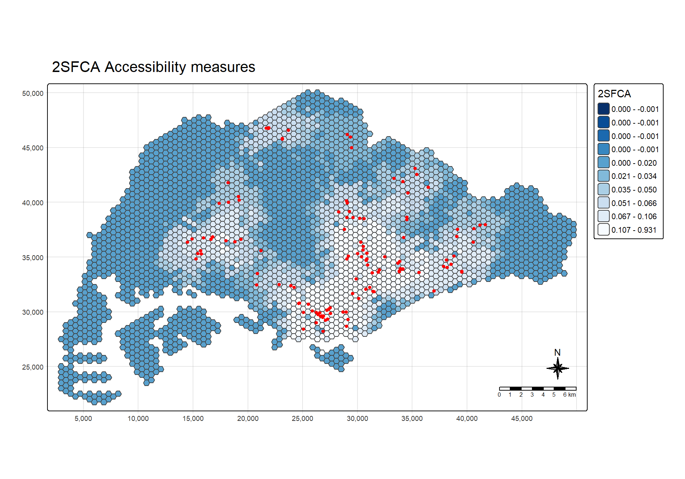

pacman::p_load(tmap, SpatialAcc, catchment, sf,
ggstatsplot, reshape2,
tidyverse)1 Getting Started
2 Geospatial Data Wrangling
2.1 Importing geospatial data
mpsz <- st_read(dsn = "data/geospatial", layer = "MP14_SUBZONE_NO_SEA_PL")Reading layer `MP14_SUBZONE_NO_SEA_PL' from data source
`D:\smu\study\GIS\In-class_Ex\In-class_Ex07\data\geospatial'
using driver `ESRI Shapefile'
Simple feature collection with 323 features and 15 fields
Geometry type: MULTIPOLYGON
Dimension: XY
Bounding box: xmin: 2667.538 ymin: 15748.72 xmax: 56396.44 ymax: 50256.33
Projected CRS: SVY21hexagons <- st_read(dsn = "data/geospatial", layer = "hexagons") Reading layer `hexagons' from data source
`D:\smu\study\GIS\In-class_Ex\In-class_Ex07\data\geospatial'
using driver `ESRI Shapefile'
Simple feature collection with 3125 features and 6 fields
Geometry type: POLYGON
Dimension: XY
Bounding box: xmin: 2667.538 ymin: 21506.33 xmax: 50010.26 ymax: 50256.33
Projected CRS: SVY21 / Singapore TMeldercare <- st_read(dsn = "data/geospatial", layer = "ELDERCARE") Reading layer `ELDERCARE' from data source
`D:\smu\study\GIS\In-class_Ex\In-class_Ex07\data\geospatial'
using driver `ESRI Shapefile'
Simple feature collection with 120 features and 19 fields
Geometry type: POINT
Dimension: XY
Bounding box: xmin: 14481.92 ymin: 28218.43 xmax: 41665.14 ymax: 46804.9
Projected CRS: SVY21 / Singapore TM2.2 Updating CRS information
mpsz <- st_transform(mpsz, 3414)
eldercare <- st_transform(eldercare, 3414)
hexagons <- st_transform(hexagons, 3414)st_crs(mpsz)Coordinate Reference System:
User input: EPSG:3414
wkt:
PROJCRS["SVY21 / Singapore TM",
BASEGEOGCRS["SVY21",
DATUM["SVY21",
ELLIPSOID["WGS 84",6378137,298.257223563,
LENGTHUNIT["metre",1]]],
PRIMEM["Greenwich",0,
ANGLEUNIT["degree",0.0174532925199433]],
ID["EPSG",4757]],
CONVERSION["Singapore Transverse Mercator",
METHOD["Transverse Mercator",
ID["EPSG",9807]],
PARAMETER["Latitude of natural origin",1.36666666666667,
ANGLEUNIT["degree",0.0174532925199433],
ID["EPSG",8801]],
PARAMETER["Longitude of natural origin",103.833333333333,
ANGLEUNIT["degree",0.0174532925199433],
ID["EPSG",8802]],
PARAMETER["Scale factor at natural origin",1,
SCALEUNIT["unity",1],
ID["EPSG",8805]],
PARAMETER["False easting",28001.642,
LENGTHUNIT["metre",1],
ID["EPSG",8806]],
PARAMETER["False northing",38744.572,
LENGTHUNIT["metre",1],
ID["EPSG",8807]]],
CS[Cartesian,2],
AXIS["northing (N)",north,
ORDER[1],
LENGTHUNIT["metre",1]],
AXIS["easting (E)",east,
ORDER[2],
LENGTHUNIT["metre",1]],
USAGE[
SCOPE["Cadastre, engineering survey, topographic mapping."],
AREA["Singapore - onshore and offshore."],
BBOX[1.13,103.59,1.47,104.07]],
ID["EPSG",3414]]2.3 Cleaning and updating attribute fields of the geospatial data
eldercare <- eldercare %>%
select(fid, ADDRESSPOS) %>%
mutate(capacity = 100)hexagons <- hexagons %>%
select(fid) %>%
mutate(demand = 100)3 Apsaital Data Handling and Wrangling
3.1 Importing Distance Matrix
ODMatrix <- read_csv("data/aspatial/OD_Matrix.csv", skip = 0)3.2 Tidying distance matrix
distmat <- ODMatrix %>%
select(origin_id, destination_id, total_cost) %>%
spread(destination_id, total_cost)%>%
select(c(-c('origin_id')))distmat_km <- as.matrix(distmat/1000)4 Calculate Catchment Ratio
df_2sfca <- catchment_ratio(
consumers = hexagons$demand,
providers = eldercare$capacity,
cost = distmat_km,
max_cost = 5) %>%
as.data.frame() %>%
rename("2SFCA" = ".")4.1 Mapping 2SFCA
mapex <- st_bbox(hexagons)hex_2SFCA <- bind_cols(hexagons, df_2sfca)
tm_shape(hex_2SFCA,
bbox = mapex) +
tm_polygons(fill = "2SFCA",
fill.scale = tm_scale_intervals(
style = "quantile",
n = 10,
values = "-brewer.blues")) +
tm_shape(eldercare) +
tm_dots(size = 0.3,
fill = "red",
col = "black") +
tm_title("2SFCA Accessibility measures")+
tm_layout(frame = TRUE) +
tm_compass(type="8star", size=2) +
tm_scalebar() +
tm_grid(alpha = 0.2)
4.2 Enhanced 2-step Floating Catchment
step_weights <- list(c(5, .01), c(4, .05), c(3, .1), c(2, .4), c(1,1))
df_e2sfca <- catchment_ratio(
consumers = hexagons$demand,
providers = eldercare$capacity,
cost = distmat_km,
weight = step_weights) %>%
as.data.frame() %>%
rename("E2SFCA"=".")4.3 Kernel Density 2-step Floating Catchment Area
df_kd2sfca <- catchment_ratio(
consumers = hexagons$demand,
providers = eldercare$capacity,
cost = distmat_km,
weight = "gaussian") %>%
as.data.frame() %>%
rename("KD2SFCA"=".")4.4 3-step Floating Catchment Area
df_3sfca <- catchment_ratio(
consumers = hexagons$demand,
providers = eldercare$capacity,
cost = distmat_km,
step_weights,
normalize_weight = TRUE) %>%
as.data.frame() %>%
rename("3SFCA"=".")